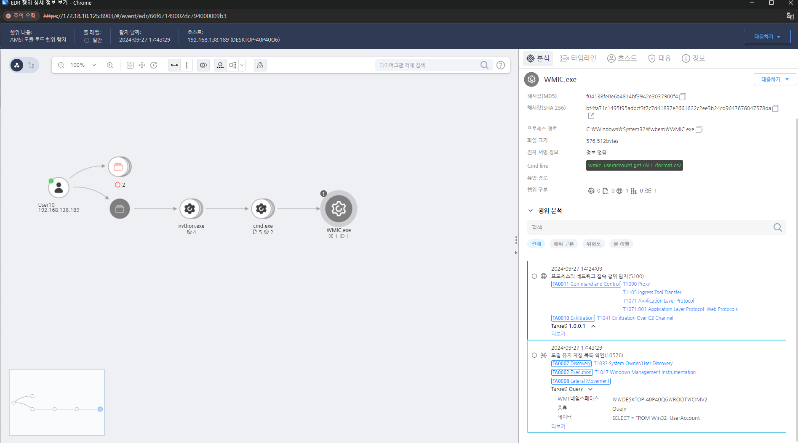

T1047.000.01 시스템 정보 수집(WMI)
D3FEND
MITRE ATT&CK 액션을 기준으로 대응 방안을 작성
Detection
- Action = "WmiCall" AND
- WMIDATA = "Win32UserAccount"
Detection(EDR)

Response
WMI 사용 내역과 명령 실행을 모니터링하여 의심스러운 활동을 탐지합니다.
Mitigations
WMI 원격 액세스 제한 (M1026 - Privileged Account Management)
- 그룹 정책(GPO)에서 원격 WMI 액세스를 특정 관리자 계정으로 제한
- WMI 원격 실행을 차단하거나 특정 사용자만 실행할 수 있도록 ACL(Access Control List) 설정
- Windows Defender Firewall에서 WMI 관련 포트(135/TCP, DCOM 49152-65535)를 제한
WMI 서비스 및 네임스페이스 보호 (M1042 - Disable or Remove Feature or Program)
- 필요하지 않은 경우 WMI 서비스(
Winmgmt)를 비활성화
- WMI 네임스페이스(
ROOT\subscription 등)에 대한 권한을 검토하고 불필요한 접근 제한
- WMI 이벤트 필터 및 소비자를 주기적으로 검사하여 악성 WMI 지속성 제거
WMI 실행 및 이벤트 로깅 강화 (M1047 - System Logging & Monitoring)
- Windows Event ID 4688 (새로운 프로세스 생성) 및 Event ID 5861 (WMI 활동) 모니터링
- Sysmon(Event ID 19, 20, 21)을 활성화하여 WMI 스크립트 실행 및 원격 WMI 액세스 탐지
- WMI Consumer 및 Filter를 정기적으로 감사하여 악성 지속성 여부 확인
EDR/XDR 솔루션을 활용한 WMI 활동 탐지 (M1040 - Behavior-Based Detection)
- EDR(Endpoint Detection & Response) 솔루션을 사용하여 WMI를 통한 원격 코드 실행 탐지
- 이상 행동 기반 탐지를 활성화하여 비정상적인 WMI 사용 패턴 감지
- PowerShell 및 WMI 실행 내역을 SIEM(Security Information and Event Management)에서 수집 및 분석
사용자 및 관리자 권한 최소화 (M1018 - User Account Management)
- 일반 사용자가 WMI를 실행할 수 없도록 로컬 보안 정책을 조정
- 도메인 관리자 계정과 로컬 관리자 계정을 분리하고, 불필요한 관리자 권한 제거
- JEA(Just Enough Administration) 정책을 적용하여 최소한의 권한만 부여
PowerShell 및 스크립트 실행 제한 (M1038 - Execution Prevention)
- PowerShell Constrained Language Mode를 활성화하여 악성 WMI 스크립트 실행 제한
- AppLocker 또는 WDAC를 사용하여 신뢰되지 않은 WMI 스크립트 실행 차단
- PowerShell ScriptBlock Logging을 활성화하여 WMI를 이용한 명령 실행 추적
Affected Techniques
Action 실행시 함께 영향을 받는 다른 Techniqes
| D3FEND |
| D3-SCA System Call Analysis |
| D3-PM Platform Monitoring |
| D3-FA File Analysis |